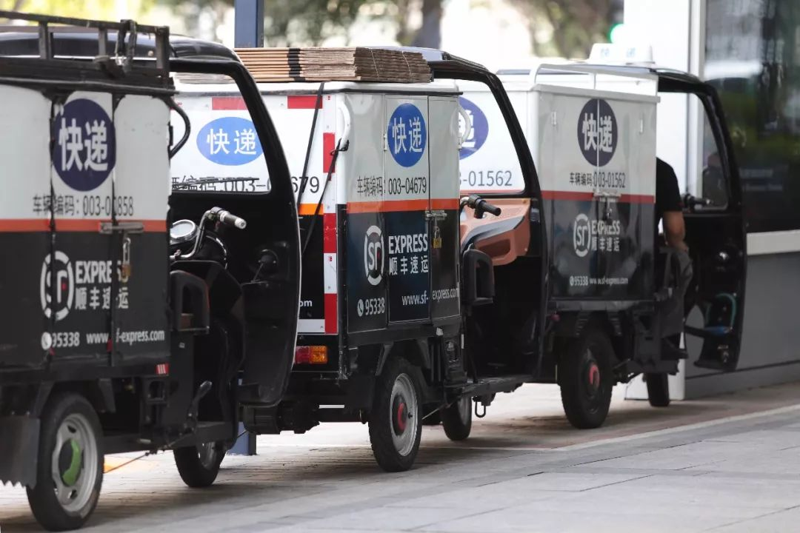
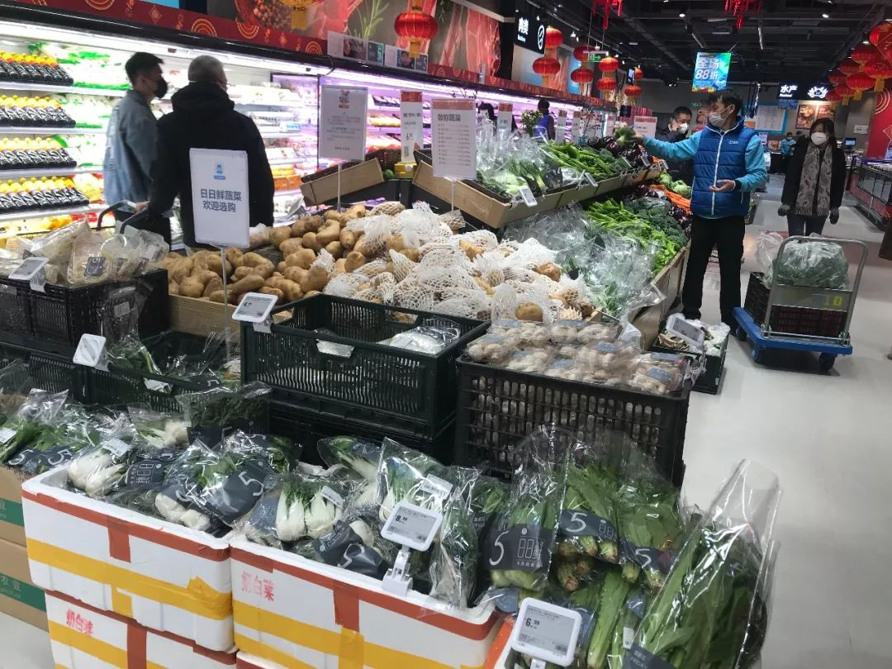

疫情带来六大影响，中国芯片和消费电子行业积极自救
原文链接 备份链接 _ 疫情首先冲击劳动密集型的电子组装制造工厂，引发供应链上的各种连锁反应，可能在短期内延缓中国电子信息制造产业飞奔的脚步，政府、行业协会和企业应需要多种形式的互助和自救 _ 文 |《财经》记者 周源 陈潇潇 编辑 | …
《第一财经》YiMagazine告读者
_
_
_
因疫情持续，杂志在印刷和物流配送等环节受到很大影响，2月刊肯定已经无法按时出版。
《第一财经》YiMagazine编辑部因此决定将2020年2月刊、3月刊合并出版。合刊将包含一组“武汉新冠疫情”主题的重磅封面报道。同时，商业报道如研报、访谈以及专栏等常规栏目仍然保留，因此它会很厚——但定价不变，仍为48元。
合刊的出版时间为2020年3月5日，即国内大部分城市的订阅读者和零售点将在那之前（正常物流下）拿到杂志。届时，在杂志的微店、App和小程序，及第一财经App上，新刊也会上线售卖。
很抱歉由此给读者带来不便。各行业在非常时期都难免仓促，望大家理解。疫情结束之后，我们在下半年亦有计划推出增刊和特定主题的单行本，回报一直以来支持我们的订户和读者。
2020年农历春节以来，编辑部其实从未放假。自疫情升级，我们在微信和微博坚持每天推送关于疫情的报道，也欢迎关注。
请继续阅读《小哥不够用，物流配送复工不易》
国家邮政局官宣的复工可能更像是一个表态，落实到具体而微的配送环节上，小哥不够用仍是短期内无法解决的问题。
记者 | 邓舒夏 刘娉婷
编辑 | 陈 锐
物流运输和本地配送的时效性曾是中国最引以为豪的商业指标之一，但疫情之下，这套运转多年的成熟的物流体系正遭遇罕见的“用工荒”。
从2月1日开始，位于上海的生鲜供应链服务商九曳，为自己的物流合作伙伴引入了大量原先来自餐饮行业的新司机。正式上岗前，这些新司机需接受半小时“速成班”的培训，了解生鲜供应链大体的配送流程。一些更具体的操作细节问题，则只能在实际运输过程中遇到时通过直播或者看操作手册等方式解决。
“这是特殊情况下的特事特办。过去我们对于司机的培训流程是相对苛刻和复杂的，还要参加考核才能正式上岗。” 九曳供应链鲜运事业部总经理马玉君告诉《第一财经》YiMagazine。
春节假期至今，受疫情影响，生鲜电商出现了全行业的单量爆发式增长，这给供应链带来了巨大的压力。以往春节，九曳供应链的承运商留下1/10的司机作为运力就已足够，但今年，供应链节奏的调整和司机复工难两个问题叠加，即使已经招聘了近50名临时新司机，九曳的运力也只恢复到正常时期的40%左右。
2月10日，国家邮政局发布消息称，中国邮政、顺丰速运、京东物流、苏宁物流及三通一达等13家寄递企业已自当日起全面恢复。不过，官宣的复工可能更像是一个表态，落实到具体而微的配送环节上，小哥不够用仍是短期内无法解决的问题，因为他们要么无法顺利回到大城市，要么回来之后还得按规定经历数日“隔离”。

顺丰速运是最早恢复的寄递企业之一。
生鲜和外卖：奖励拉新，共享员工
九曳供应链的业务主要涉及生鲜产品的仓储、运输和配送。按照原计划，九曳供应链在春节前已经统筹好客户的用车需求，每天的用车数也已经排好。但疫情导致生鲜电商的单量暴涨，司机却无法临时返工，这给九曳供应链和生鲜电商的物流运输带来了极大挑战。
根据九曳供应链提供给《第一财经》YiMagazine的数据，春节期间，九曳供应链的客户——如每日优鲜、京东、天猫等——需求量相比去年都上涨百倍之多，还有一些自身物流运输能力跟不上供给的新客户。
“有些客户在疫情期间做业务转型，例如先前平时每天补一车货，但前端业务模式的变化导致一天可能要补三车货。货量的突然增加是没有计划性的，有时候可能提前两小时突然要用车。”马玉君说。
人手不够成为最大的困难。九曳供应链在武汉当地只有2名同事，主要负责捐赠物资的出库和入库，无法提供商业业务的支持，而北京和上海等地区只有40%的司机返工，整体产能也只是恢复到七成左右。
生鲜企业配送人员不足，单人配送任务繁重。
为了解决复工问题，九曳供应链除了使用增加收入30%至50%的方式激励司机，还主动联系一些先前做餐饮配送的司机。疫情期间，餐饮企业几乎停摆，一些司机因此陷入无交易状态，九曳号召他们临时加入生鲜行业，成为冷链输送司机。
生鲜的冷链运输不仅涉及到城市干线，还包括离消费者最近的距离三公里的配送到家服务，这对生鲜电商企业的运力是一个挑战。
许多近日在盒马鲜生、叮咚买菜等平台下单的消费者，会发现配送的时间通常需要4小时以上。叮咚买菜就此对《第一财经》YiMagazine书面回复称，春节期间，该公司包括配送小哥、前置仓分拣员工和包装员工等在内共保留了一线总员工数的75%。1月22日，叮咚买菜就已意识到需求量会持续对供应和物流产生压力。因此鼓励放假的员工回来上班，并且鼓励员工介绍亲朋好友加入，每介绍成功一名，员工可以获得1200元至2000元的奖励。
除此之外，生鲜电商还纷纷“共享员工”。
2月3日，盒马联合云海肴、西贝、探鱼、青年餐厅等餐饮品牌达成“共享员工”合作，截至2月10日，陆续有餐饮、酒店、影院等32家企业加入盒马，项目覆盖了超过1800余人。

北京一家盒马鲜生门店，共享员工在仓内理货。
叮咚买菜也寻求与餐厅、酒店等服务型企业合作，目前已经有400多名员工加入其一线工作岗位，据称整体计划招纳1500人左右。
“目前店中有10位共享员工，后期陆续还会有。我们的内仓更需要人员，共享员工可以满足这方面的运营需求。”盒马鲜生（北京国贸世纪财富中心店）店长朱梅告诉《第一财经》YiMagazine。
来自云海肴的王紫轩便在这10人之列。此前他是云海肴的前厅主管。过年期间，王紫轩一直待在北京，大约两周前，他收到了公司推送的有关和盒马鲜生合作用工的邮件。“当时报名的就有200人左右，都是一直在北京没有回老家的人，后来筛选了年龄，要求18到45岁，通过率挺高的。”王紫轩说。
2月4日，王紫轩到达盒马鲜生的门店，经过2小时的业务培训后便开始了理货、盘点等工作。他没有透露具体的酬劳金额和每日用工时长。
而在配送方面，盒马鲜生正在尝试“更直接”的解决方案——与运力公司合作，用汽车统一送到社区再定点配送。相比电瓶车，这样的单次配送量能高出2-3倍，且更能实现“无接触配送”。自2月8日起，上海大众出行、财新联合汽车租赁（北京）有限公司、壹玖壹玖酒类平台科技股份有限公司也宣布与盒马达成全国范围的用工合作，覆盖北京、广州、上海、成都等城市，目前试点区域以有停车条件的门店为主。
同时，疫情对实体餐饮的打击也直接传导到外卖配送行业，饿了么和美团外卖甚至都拒绝了《第一财经》YiMagazine的官方采访。
“在我负责的100多个外卖商家中，只有2家还在营业。”一位北京的美团外卖经理对《第一财经》YiMagazine透露，他负责的片区不久前发现了新型肺炎确诊病例，大多数餐饮商铺都被禁止营业，而能开业的店铺也被告知不允许接待超过3人的就餐团体，否则会被视为“聚餐”。
除了成品外卖，不少餐饮也在探索更多的提振业绩的方式，比如云海肴正在开发基于社区和供应链的“上门卖菜”业务，以门店三公里范围内的小区为半径建立服务站，为居民提供采购食品原材料和半成品的服务。
另一名在北京饿了么跑单的配送人员表示，他准备这两天就回北京，为隔离后的复工做准备。“我算幸运的，年前回了家，有的同事过年留在北京，年前一天的收入就能达到六七百 ，但这半个月没有多少单可接，拿不到多少奖励工资，也买不到口罩，现在他们都后悔了，还不如回家里过年舒服。”
快递小哥：单子和收入都少了，但更忙了
疫情叠加春节的传统淡季，让货拉拉遭遇了订单的骤降。
“毕竟大家不敢出门了，企业停工，交通也受到管制，我们的业务量在春节和疫情期间下降了93%，单量只有疫情前的7%。”货拉拉创始人兼CEO 周胜馥对《第一财经》YiMagazine说。
2月8日货拉拉推出“新冠肺炎司机保障计划”，司机只要在2月8日前3个月内曾经完成过1个订单即可申领。如果不幸感染了新型冠状病毒而身故，其家庭可获得货拉拉司机关怀基金50万元的救助。“我非常理解疫情下仍然在一线工作的司机的忧虑和他们家人的担心。对很多司机家庭来说，司机是顶梁柱，是一个家的支撑。”周胜馥说。
中通、圆通等快递公司也设立了相似的疫情保障基金。
根据国家邮政局2019年发布的快递员人群报告，76.31%的快递员来自农村，15.89%的快递员来自县城，来自城市的比例仅为7.8%。
这样的从业者结构意味着，即便不少城市相继出台了疫情防控规定，要求小区不能随意限制快递、外卖等行业复工及送达服务，但快递员想要从老家顺利回来复工，仍然并非易事。菜鸟网络和京东物流都拒绝接受有关快递复工问题的采访。
“我们组本来有5个人，现在只有我和另外一名同事到岗了，剩下的要么被困在村里出不来，要么在小区里隔离着，不让出来上班。”赵志雄告诉《第一财经》YiMagazine，他在快递行业工作了近20年，如今负责海淀某个片区内的中国邮政和中通的快递揽收工作。
相比其他“三通一达”的同行，赵志雄是幸运的。他的人事关系在中国邮政，即便推迟复工也能拿到基本工资。中国邮政对揽收人员规定的复工时间为2月3日，也就是正月初十，但为了早点为客户服务，他每年都会在初六左右从河北回京，今年也是如此——当时北京对于外地抵京人员的管控并不像现在这么严格。
而中通的复工时间是2月10日，很多想要返京的同事此时已经回不来了。
“现在邮政的快递人员缺口不大，毕竟是国企，过年期间也会有三分之一左右的人员在岗，我们这片区的复工人员现在能达到三分之二，大家老家都是周边省份的。但是中通在除夕前两天时就全员放假了，所以他们现在缺人比较厉害。”赵志雄说道。据他了解，对于刚回京的工作人员，中国邮政要求回京员工在家至少隔离4天，中通要求的隔离时间更长。
在各种兼职招聘App上，很容易找到近一周发布的快递员招聘信息，其中不少标注有“当天入职”，“包吃包住”等关键词，开出的月薪是在8000元至1.2万元之间。据赵志雄介绍，一般快递公司开给临时代派人员的提成是每单2至3元，相比正式员工的1至1.5元高出不少。“但我没有在站点看到任何新人，都是老员工。”
即便顺利开工，赵志雄对自己近期的工作前景并不乐观——由于很多同事没有复工，他需要帮忙承担一部分相邻区域的揽收工作，且大多数小区禁止快递车辆进入，他只能在小区门口等待揽收，以前一天能揽收200多单，现在一天也就70至80单。
“其实需要揽收的单量也不多，我的很多客户都是淘宝卖教辅书的，本来年后是发快递的旺季，但现在开学延期，他们的生意也不好了，我揽收几天下来，收入至少比平时减少了一半吧。”这几天赵志雄经手最多的快件是口罩、消毒液，手套、鞋套，其中不乏从国外转运进来的防疫物品，其次就是蔬菜等生鲜。

2月11日，中国邮政为浙江省学校运送教材。| 图片来源：中国邮政官方微博
揽收上来的快件后续会经过分拨、分拣两层消毒环节，赵志雄每天也都能从中国邮政和中通那分别领到口罩、手套和84消毒液等工作用品，但他只拿其中一份，“一线的医生都不怕，我一个送快递的怕什么，该复工时就复工，注意好自己的防护就行。”他说道。
尽管收入令人焦虑，但赵志雄在疫情期间收获了不少公司自豪感：“武汉只有中国邮政和顺丰能发，顺丰能发3kg以下的小件，我们什么都能发。”
物流仓储：什么时候上班要等政府通知
“每天都有客户在群里催我们开仓拿货，但仓库都被封条贴着呢，什么时候能开要等园区通知，园区则要等政府部门的审批。”李帝文告诉《第一财经》YiMagazine，他在上海德邦快递的“仓储与供应链”部门就职，主要负责对接购买德邦仓储服务的物流客户，但目前正被小区强制隔离观察中。
“有的仓库经理连小区都进不去，只能在宾馆隔离。”他补充道。
据李帝文了解，目前德邦上海总部已经开工，保障系统后勤的职能部门已经悉数复工，外地返沪的则需要居家隔离十四天，期间远程办公。“老家在湖北的同事需要等疫情结束后才能回来上班。”
网传的一份《德邦快递总部园区防疫手册》中提到，员工进入园区需要测量体温和佩戴口罩，并且提倡自带餐盒在卡位上就餐，园区内禁止在便利店和餐厅用餐，晚餐则需自己回家解决——晚上六点以后园区要清场消毒。在办公区内，员工之间要至少相隔2个卡位以上，使用会议室必须窗户全开，用完一次消毒一次。为了防止大面积感染发生，整个园区的中央空调都将关闭。
在被隔离之前，李帝文每天能去公司前台领到一枚口罩，被告知建议使用三天。后来被隔离在小区后，他主要靠打游戏来消磨在家的时间，偶尔去微信群里安抚一下客户的情绪。
“现在是非常时期，大家都在渡难关，我们收到订单了，如果德邦不能提供物流支持，那我们只能另选物流商了，现在订单是我们第一位的。”一位客户在工作群中抱怨道。李帝文自己的收入也与仓库操作量直接挂钩，这几天的“提成荒”自不必说。
对于顺丰和京东物流的顺利开工，他并不意外：“听同行说，京东这边的自营店铺有防护用具备货，而顺丰本来就有化工运输这种特种运输资质，本身就储备了很多防护物资。”
2月10日，德邦通过微信公众号宣布了“快递”复工的消息，但李帝文所在部门预计的复工时间是17日前后。“很多同事还在家隔离，没法去现场操作系统，临时工也不好找，想正常运转起来挺难的。”他说道。
为了补齐配送缺口，“共享用工”的方式也同样被快递物流行业所采用。2月9日，京东联合旗下配送平台“达达”宣布将以灵活用工的方式向社会提供3.5万个就业机会，其中京东物流向全国开放包括仓储员、分拣员、快递员、驾驶员等在内的超过2万个一线岗位。目前参与进来的企业有永辉超市、步步高等。
至于这一连串的B端连锁反应何时才能结束，恐怕只有等待疫情过去之后了。
（应采访对象要求，文中李帝文、赵志雄为化名）
本文版权归第一财经所有，
未经许可不得转载或翻译。

原文链接 备份链接 _ 疫情首先冲击劳动密集型的电子组装制造工厂，引发供应链上的各种连锁反应，可能在短期内延缓中国电子信息制造产业飞奔的脚步，政府、行业协会和企业应需要多种形式的互助和自救 _ 文 |《财经》记者 周源 陈潇潇 编辑 | …
原文链接 备份链接 《创新经济战疫计划》，是燃财经在新型肺炎疫情期间推出的特别栏目，关注创新经济企业遇到的新难题、商讨应该采取的新对策，希望能够帮助中小企业一起战胜挑战、把握机会。 作者 | 唐亚华 编辑 | 魏佳 2月10日起，北京、上 …
原文链接 备份链接 王一博所在的《有翡》剧组此前宣布停工（图源：电视剧《有翡》官方微博） “ 虽然剧组复工踊跃，但短期来看，距离真正的复工还需要时间。 ” 2月10日，横店影视集聚区管理办公室下发关于确保新冠肺炎疫情防控期间影视企业（剧 …
原文链接 备份链接 _ 在新冠肺炎疫情中心区域，远比平时忙碌的快递员在街头难见其他人，遇到别家公司的快递员，大家叫不上名字，但都打个招呼，在特殊的时点里惺惺相惜 _ 文 |《财经》记者 俞琴 编辑 | 鲁伟 新冠肺炎疫情在武汉蔓延后，整座 …
原文链接 备份链接 面对依然紧张的防疫形势，上海的街道、居民区、楼宇不断放出防疫大招，以上海人特有的智慧筑起“上海堡垒”，守卫这座城市。 文 | 陈 冰 2月10日是上海正式意义上的“复工日”，在经历了一个史无前例安静春节之后，人员返程、 …